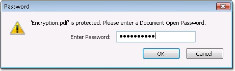
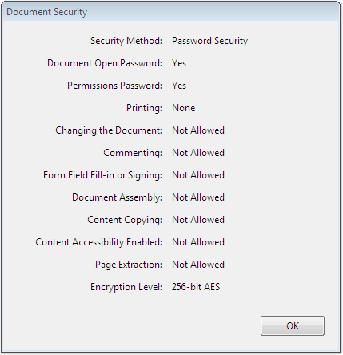
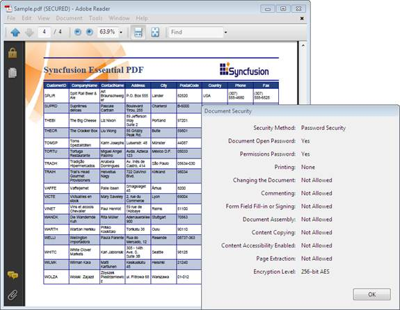
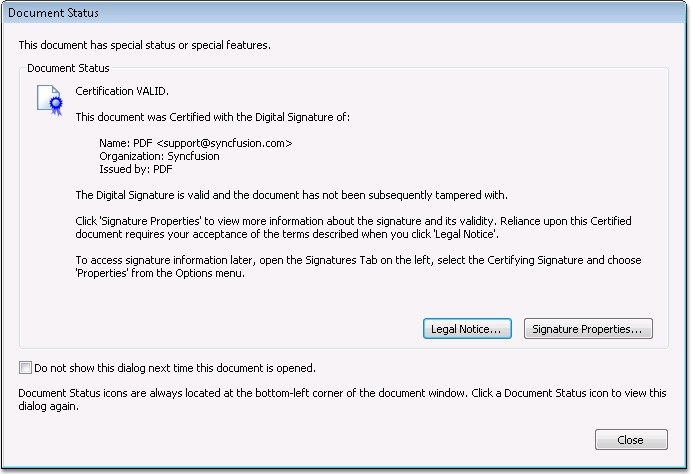
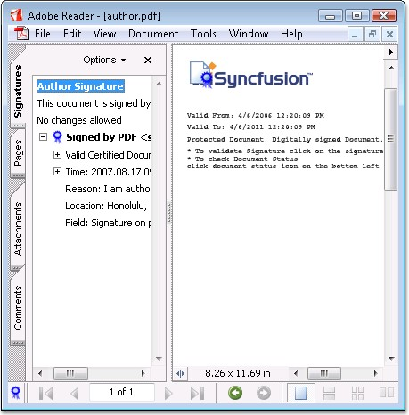
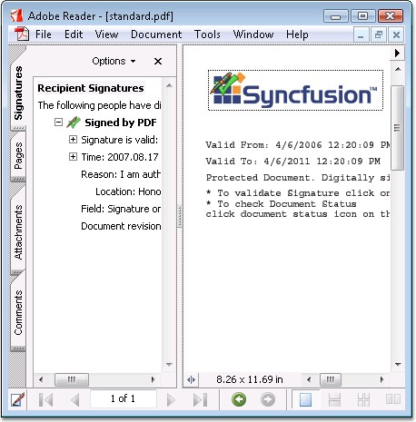
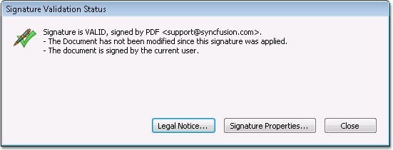
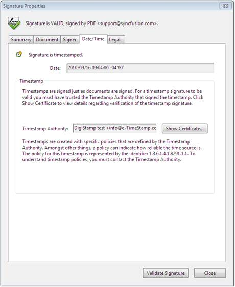
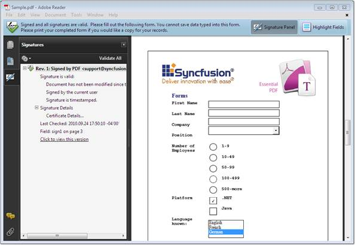

Adobe provides options for securing a PDF document from unauthorized access, and for restricting the access for some user. This section demonstrates various options provided by Essential PDF to secure a PDF document.
The following techniques are used to protect a PDF document:
· Encryption and
· Digital Signature
Encryption
A PDF document is encrypted to protect its contents from unauthorized access. Encryption applies to all strings and streams in the document. Essential PDF provides support for 40, 128 and 256-bit encryption. Essential PDF also provides support for restricted document operations like:
· Allow EditContent
· Allow Copy Content
· Allow Edit Annotations
· Allow AccessibilityCopyContent
· Allow AssembleDocument
· Allow Print
· Allow FullQualityPrint
You can also protect a document with user and owner password.
 Note: You must add the Syncfusion.Pdf.Security
namespace to work with security settings.
Note: You must add the Syncfusion.Pdf.Security
namespace to work with security settings.
Encryption Algorithms
Adobe supports Advanced Encryption Standard (AES) in Adobe version 7.0 and later. Essential PDF also supports strong encryption using 128 and 256-bit AES algorithm. In order to achieve this, specify the type of encryption algorithm in the Algorithm property of the Security class.
The following code snippet illustrates this.
|
[C#]
// Set 128 bit AES encryption mode. doc.Security.KeySize = PdfEncryptionKeySize.Key128Bit; doc.Security.Algorithm = PdfEncryptionAlgorithm.AES;
|
Note:
40-bit encryption will use RC4 algorithm by default and 256-bit encryption uses
AES algorithm.
The following code example illustrates the protection of documents with user and owner password.
|
[C#]
// Set encryption key. doc.Security.KeySize = PdfEncryptionKeySize.Key128Bit; doc.Security.Algorithm = PdfEncryptionAlgorithm.AES;
// Setting username and password to protect the document. doc.Security.OwnerPassword = "syncfusion"; doc.Security.UserPassword = "password";
// Allow print with full quality. doc.Security.Permissions = PdfPermissionsFlags.Print | PdfPermissionsFlags.FullQualityPrint; |
|
[VB.NET]
' Set encryption key. doc.Security.KeySize = PdfEncryptionKeySize.Key128Bit doc.Security.Algorithm = PdfEncryptionAlgorithm.AES
' Setting username and password to protect the document. doc.Security.OwnerPassword = "syncfusion" doc.Security.UserPassword = "password"
' Allow print with full quality. doc.Security.Permissions = PdfPermissionsFlags.Print Or PdfPermissionsFlags.FullQualityPrint |
The following screen shot shows how to open an encrypted document.

Figure 45: Opening an Encrypted document
The following screen shot shows a security dialog of encrypted documents with restrictions.

Figure 46: Document Security Dialog box
The following screen shot shows a sample encrypted document.

Figure 47: A Simple encrypted document
Digital Signature
In general, digital signatures are used to authenticate the identity of a user and the document's content. It stores information about the signer and the state of the document, i.e. when it was signed.
When enterprises distribute documents electronically, it is often important that recipients can verify:
· Whether the content has not been altered. (integrity)
· Whether the document is coming from the actual person who sent it. (authenticity)
· Whether an individual who has signed the document cannot deny the signature. (non-repudiation)
Digital signatures address these security requirements by providing greater assurances of document integrity, authenticity and non-repudiation.
A PDF document may contain the following standard types of signatures:
One or more document (or ordinary) signatures. These signatures are sometimes referred to as recipient signatures. If a signed document is modified and saved by incremental update, the data corresponding to the byte range of the original signature is preserved. If the signature is valid, it is possible to recreate the state of the document as it existed at the time of signing.
At most one Modification Detection and Prevention (MDP) signature. This signature is also referred to as an author or certifying signature.
The following screenshot shows an author signature prompt.

Figure 48: Author Signature Prompt
The following screenshot shows an author signature.

Figure 49: Author Signature
The following screen shot shows a standard signature.

Figure 50: Standard Signature
The following screen shot shows the dialog that appears during verification.

Figure 51: Signature Validation Status
The following code example illustrates the signing of a document with the author’s signature.
|
[C#]
//Map the path of the certificate store.
//Get certificate. PdfCertificate pdfCert = new PdfCertificate(@"..\..\Data\PDF.pfx", "syncfusion");
//Sign the document in the image. signature = new PdfSignature(page, pdfCert, "Signature"); bmp = new PdfBitmap(@"..\..\Data\syncfusion_logo.gif"); signature.Bounds = new RectangleF(new PointF(5, 5), bmp.PhysicalDimension);
//Set the Author signature. signature.Certificated = true;
//Set signature display properties.
// Set signature Info. signature.ContactInfo = "johndoe@owned.us"; signature.LocationInfo = "Honolulu, Hawaii"; signature.Reason = "I am author of this document."; |
|
[VB]
'Map the path of the certificate store.
'Get certificate. Dim pdfCert As PdfCertificate = New PdfCertificate("..\..\Data\PDF.pfx", "syncfusion")
'Sign the document in the image. signature = New PdfSignature(page, pdfCert, "Signature") bmp = New PdfBitmap("..\..\Data\syncfusion_logo.gif") signature.Bounds = New RectangleF(New PointF(5, 5), bmp.PhysicalDimension)
'Set the Author signature. Private signature.Certificated = True
' Set signature display properties.
'Set signature Info. signature.ContactInfo = "johndoe@owned.us" signature.LocationInfo = "Honolulu, Hawaii" signature.Reason = "I am author of this document." |
Note: Currently only self-created and third-party
.pfx certificates are supported.
Timestamp in digital signature
Essential PDF supports addition of timestamp in digital signatures. The date and time at which the document is signed can be added as a part of the signature. Timestamps are easier to verify when they are associated with a timestamp authority’s trusted certificate. Including a timestamp, helps to establish exactly when the document is signed and reduces the chances of an invalid signature. The timestamp can be obtained from a third-party timestamp authority or from the certificate authority that issued the digital ID.
Timestamps appear in the signature field and in the Signature Properties dialog box. If the timestamp is included, the certificate will appear in the Date/Time tab of the Signature Properties dialog box. If no timestamp is added, the signature field displays the local time of the computer at the moment of signing.
The following figure shows the timestamp properties of the digital signature.

Figure 52: Timestamp properties of the digital signature
To apply timestamp using Essential PDF, the TimeStampServer property of the PdfSignature class has to be used. The parameters for the TimeStampMethod are the URI of digital server, username and password.
The following code illustrates the method for adding timestamp in the digital signature.
|
[C#] //Get certificate. PdfCertificate pdfCert = new PdfCertificate(@"..\..\Data\PDF.pfx", "syncfusion");
//Sign the document with timestamp. PdfSignature signature = new PdfSignature(page, pdfCert, "Signature");
//Add time stamp using the server URI and credentials. signature.TimeStampServer = new TimeStampServer( new Uri("http://digistamp.syncfusion.com"),"user", "123456");
[VB]
'Get certificate. Dim pdfCert As New PdfCertificate("..\..\Data\PDF.pfx", "syncfusion")
'Sign the document with timestamp. Dim signature As New PdfSignature(page, pdfCert, "Signature")
'Add time stamp using the server URI and credentials. signature.TimeStampServer = New TimeStampServer(New Uri("http://digistamp.syncfusion.com"),"user", "123456")
|
The following shows a document signed with the timestamp.

Figure 53: Document signed with timestamp